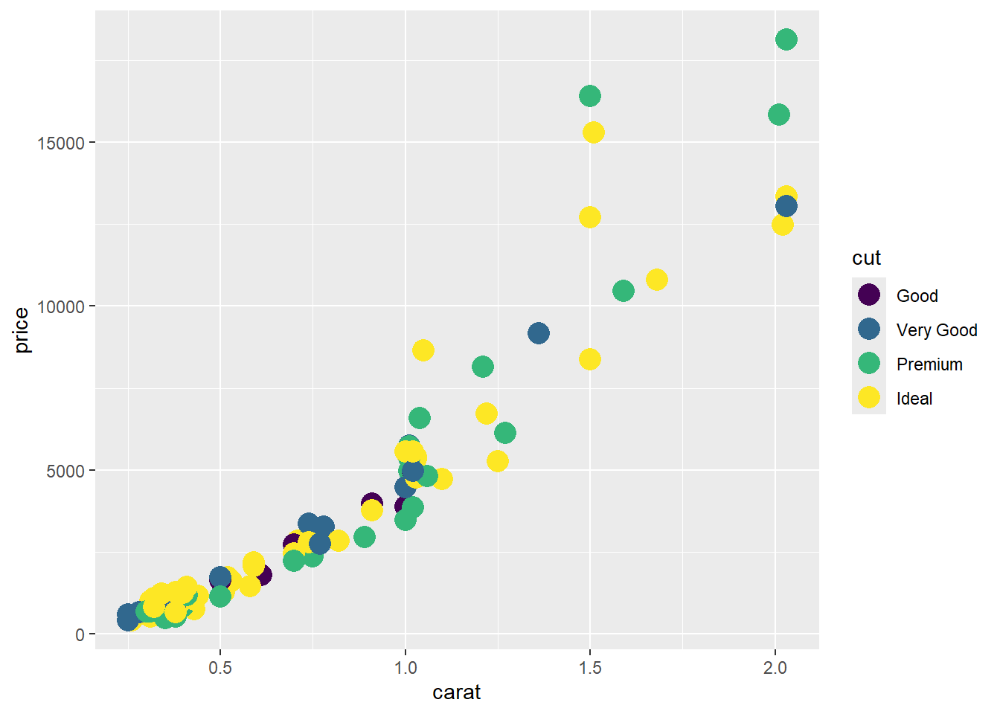
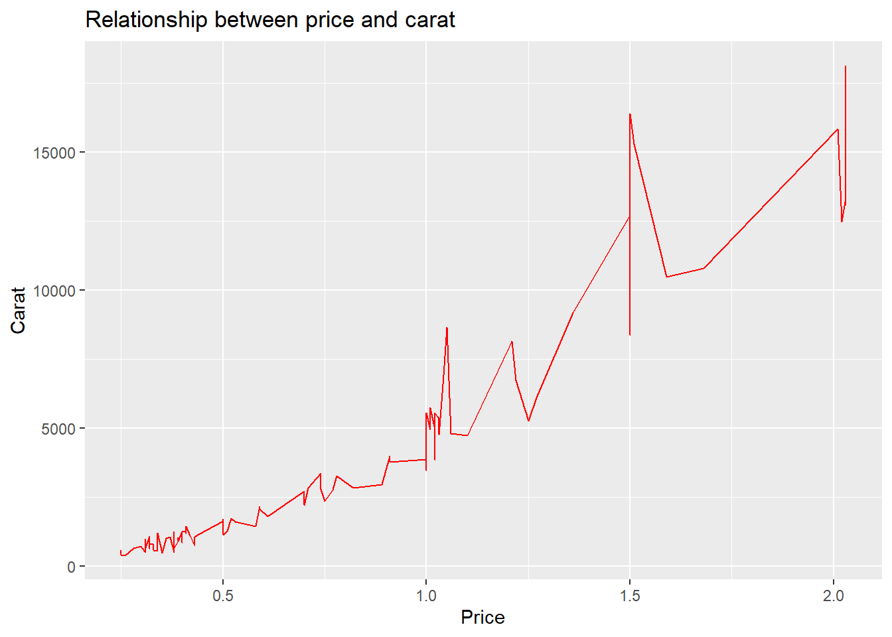
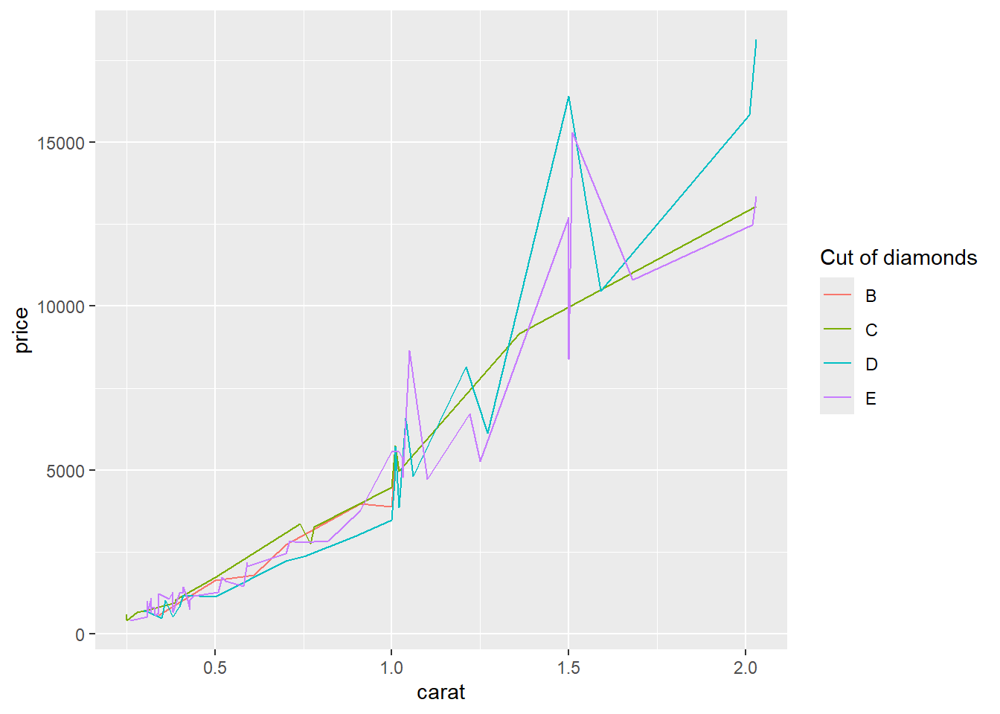

2 Introduction to ggplot2
Author: Joslin Goh
Last Updated: Feb 09, 2021
2.1 Introduction
In this chapter, we assume that the readers have a basic understanding of R and RStudio. We have prepared a chapter for those who need a quick introduction to R and RStudio.
ggplot2 is a data visualization package for R and RStudio. It is implemented based on Wilkinson (2012). The package can be installed and loaded using the command:
The layers of a graph are shown in Figure 2.1. In this chapter, we will show you how to build a plot layer by layer.
Figure 2.1: The layers of a graph
2.1.1 Example Data Set
The examples shown in this chapter come from the data set diamond from the ggplot2 package.
The diamond data set consists of the price, quality information, and physical measurements of different diamonds. The structure of the data set is displayed using the function str().
tibble [53,940 10] (S3: tbl_df/tbl/data.frame)
$ carat : num [1:53940] 0.23 0.21 0.23 0.29 0.31 0.24 0.24 0.26 0.22 0.23 ...
$ cut : Ord.factor w/ 5 levels "Fair"<"Good"<..: 5 4 2 4 2 3 3 3 1 3 ...
$ color : Ord.factor w/ 7 levels "D"<"E"<"F"<"G"<..: 2 2 2 6 7 7 6 5 2 5 ...
$ clarity: Ord.factor w/ 8 levels "I1"<"SI2"<"SI1"<..: 2 3 5 4 2 6 7 3 4 5 ...
$ depth : num [1:53940] 61.5 59.8 56.9 62.4 63.3 62.8 62.3 61.9 65.1 59.4 ...
$ table : num [1:53940] 55 61 65 58 58 57 57 55 61 61 ...
$ price : int [1:53940] 326 326 327 334 335 336 336 337 337 338 ...
$ x : num [1:53940] 3.95 3.89 4.05 4.2 4.34 3.94 3.95 4.07 3.87 4 ...
$ y : num [1:53940] 3.98 3.84 4.07 4.23 4.35 3.96 3.98 4.11 3.78 4.05 ...
$ z : num [1:53940] 2.43 2.31 2.31 2.63 2.75 2.48 2.47 2.53 2.49 2.39 ...The diamond data set consists of many data points. To simplify the illustration, we will only use a subset of the data. To sample a subset:
The function set.seed() ensures that the sample is consistent and replicable.
2.2 Data
The first step to graphing is to specify the data set and decide what goes on the axes.
Suppose we want to investigate how the price of a diamond behaves with respect to its carat. Then, the two variables (or columns) involved are price and carat. The x-axis is usually the explanatory variable and the y-axis is the dependent variable. In this scenario, price should be on the y-axis and carat on the x-axis.
To initiate this graph in ggplot2,
Figure 2.2: A blank canvas.
The command creates a blank plot with no points or lines in it. The function does not assume the type of graphs it needs to produce unless it was told. Since this is the first (base) layer which will be used over and over again, it is best to save it as an object:
2.3 Aesthetics
The first layer to be added onto the blank plot is a layer of the data points. In our case, we are interested to make a scatterplot that involves points that represent the data on the graph. The function geom_point() adds the necessary points onto the base layer.
Figure 2.3: A scatterplot of the price of diamond vs diamond carat.
Each layer has its own components. For this layer, the common components include:
col: the colour of the points specified using names, rgb specification or NA for transparent colour,size: the size of the points specified in millimeters, andshape: the shape of the points.
2.3.1 The Colour Component
A common way to specify the colour of the points is through the name of the colours. For example, red, darkblue, magenta, chocolate etc. A complete list of colours can be found here.
Suppose we want the points to appear blue, we can change it by using the option col.
Figure 2.4: The colour of the points is set to blue.
When col=NA, the points will become transparent:

Figure 2.5: The points on the scatterplot has become invisible.
2.3.1.1 Setting vs Mapping
So far, we set the colour of the points to a specific colour of our choice. In some cases, we prefer the colour to change based on the information from another column (usually categorical) in the data set.
For example, suppose we want the colour of the points on the graph to change based on cut, which has 5 categories: Fair, Good, Very Good, Premium and Ideal.
Figure 2.6: Colouring the points based on the cut variable.
This is called mapping.
2.3.1.2 Changing the Colour Palette
The choice of colours used in aes() is determined by the choice of the colour palette. When the choice is not mentioned, the default option is used. There are many online packages with pre-set palettes that you can use. We will show you the most common one known as RColorBrewer, which includes three types of colour palettes: sequential, diverging and qualitative.
Loading required package: RColorBrewerFigure 2.7: Palettes available in RColorBrewer. The first chunk shows palettes suitable for sequential categories, the middle chunk consists of palettes suitable for nominal categories whereas the last chunk of palettes are recommended for diverging categories.
Suppose we want to use the BuGn colour palette from RColorBrewer on the scatterplot created earlier, we can use the function scale_colour_brewer():
Figure 2.8: The points are coloured with the BuGn colour palette which was recommended for sequential categories.
Readers can refer here for more information about RColorBrewer.

Figure 2.9: Colour blind friendly palette (grey)

Figure 2.10: Colour blind friendly palette (black)
Both palettes are not part of RColorBrewer and are extracted from Cookbook for R. They are coded as follows:
# colour blind friendly palette with grey
cbgPalette <- c(
"#999999", "#E69F00", "#56B4E9", "#009E73",
"#F0E442", "#0072B2", "#D55E00", "#CC79A7"
)
# colour blind friendly palette with black
cbbPalette <- c(
"#000000", "#E69F00", "#56B4E9", "#009E73",
"#F0E442", "#0072B2", "#D55E00", "#CC79A7"
)Readers can also create palettes of their choice at Color Brewer 2.0. If you chose to create your own palette, we recommend having them included at the beginning of your R script.
In order to use the colour blind friendly palettes that are not part of the RColorBrewer library, we need to use scale_colour_manual instead.
Figure 2.11: Colouring the points with the colour-blind palette. The colour is determined by cut.
2.3.2 The Size Component
Another component of geom_point() is the size of the points. They can be changed by either setting or mapping. The size of the points is specified in millimeters.
2.3.2.1 Setting the Size
To change the size of all the points in the plot to 5mm,
Figure 2.12: The points in the scatterplot is set to 5mm. The points are larger than the default size in the previous figures.
The points in Figure 2.12 are larger, which is as we hoped for. However, the colours of the points are the same. This contradicts our previous effort on mapping the colours of the points to cut and saved it as p1 earlier. The reason is that geom_point() was called when we created p1, so when we called the geom_point() again to set the size, it overwrites the command to map the colours of the points.
In order to change the colour and size at the same time, we need to do so within the same geom_point().

2.3.2.2 Mapping the Size
Similar to mapping the colour component, the sizes of the points can be mapped to a variable.
Figure 2.13: Mapping the size of the points based on the cut variable.
Notice in Figure @ref{fig:visgg-aes-size-map} that the points are black in colour but the legend still includes cut. This is because the mapping contradicts p1 that was stored in such a way earlier:
The plot appears incorrect and there will be a lot of warnings, which is not printed here. In order to map both colour and size properly, we need to, again, specify the mapping of both colour and size at the same time.
Figure 2.14: Mapping the colour and size of the points to the cut variable.
2.3.3 The Shape Component
Another component to consider is the shape of the points, which are identified using numbers. The default shape of points is circle.
Figure 2.15: The shapes available in the package.
Suppose we want to set the shapes of the points to inverted triangles without changing the size and colour of the points, we start with the p object and make changes through geom_point().
Figure 2.16: Changing the points to inverted triangles
To map the points to the cut of the diamonds and set the size of all the points to 5mm,
Figure 2.17: Mapping the shape and setting the size of the points at the same time.
You may have received a warning that the shape component is not recommended for ordinal variables such as cut. This is a recommendation. Usually, the shape component is used to better visualize nominal variables. It is the readers choice to manipulate the shape component for better visual presentation.
To summarize, we recommend including the choice of colour, size and shape in one call of geom_point() to minimize error. For example,
2.4 Geometrics
Geometric objects perform the actual rendering of the layer and control the type of plot that you created. The common ones are:
geom_point()produces scatterplots,geom_line()produces line graphs, andgeom_bar()produces bar plots.
2.4.1 Line Graphs
Previously we have been drawing scatterplots to draw the relationship between carat and price. We used geom_point(). What happens if we used geom_line()?
Figure 2.18: A line graph to show relationship between diamond carat and price.
2.4.1.1 Setting Colour, the Thickness and Type of Line
Similar to geom_point(), we can set the colour of the line to red.
Figure 2.19: Setting the colour of the line graph to red.
The thickness of the line can also be changed. It is set to 1 by default, but we can change it to any decimal of our choice. The larger the number, the thicker the line.
Warning: Using `size` aesthetic for lines was deprecated in ggplot2 3.4.0.
Please use `linewidth` instead.
This warning is displayed once every 8 hours.
Call `lifecycle::last_lifecycle_warnings()` to see where this warning was
generated.
Figure 2.20: Setting the thickness of the line to 1.5mm
The default type of line is a solid line, which is also coded as 1. There are a total of 12 types of lines, in which seven of them can also be referred to using numbers 0 to 6 instead of the string values. We can change the solid line into dashed as follow:
Figure 2.21: The solid line has changed to dashed line.
2.4.1.2 Multiple Lines
To draw multiple lines, the points must be grouped by a variable. Otherwise, all the points will be connected by a single line. Hence, when we create the base layer, we need to specify the group that we want to group the points into. Usually, the grouping is based on a categorical variable.
Suppose we are interested to draw the lines according to cut.
Figure 2.22: Multiple lines (based on cut) are drawn in the same figure.
We can adjust the colour by the group.
To map the colours of the lines to cut, there are two options:
Option 1:
Option 2:
Both options produce the exact same graph. However, we prefer Option 2 over Option 1 because we can manipulate the components of the line (and points) more efficiently when creating graphs that are more complex later on.
2.4.2 Bar Plots
Bar plots are commonly used to graph categorical variables.
Suppose we are interested in how the total price of diamonds is affected by the different colour. After laying down the base layer with price on the y-axis and color on the x-axis, we use the geom_bar() function to create the bars in the graph.
Notice that the x- and y-axes are similar to that of the scatterplots. The only difference is the use of geom_bar().
The colours of the bar can be mapped to the color variable by specifying the fill option.
2.5 Others
It may be of interest to change
- x- and y-axes labels,
- title of the graph, and
- legends.
2.5.1 Axes Labels
Similar to graphing in the base package, we can change the labels of the axes by adding the components as follows:
- x-axis:
xlab("name") - y-axis:
ylab("name")
2.5.2 Title of the Graph
To add a title to the graph, we can use ggtitle():
p + geom_line(col = "red") +
xlab("Price") + ylab("Carat") +
ggtitle("Relationship between price and carat")
The title is left-centered and can be adjusted through the theme layer which we will not cover here. In general, we prefer to not add a title to the graph because captions would be added in the final presentation of the data and results.
2.5.3 Legends
There are two ways for changing the title and labels of the legend:
- modify the data frame directly, or
- use
scale_xxx_yyy(). Refer here for the different combinations ofxxxandyyy.
Suppose we want the legend to show the cut in different colours. Since the legend is related to the colour of the lines, xxx is colour and the variable is categorical, we set yyy to discrete:
p + geom_line(aes(col = cut)) +
scale_colour_discrete(
name = "Cut of diamonds",
breaks = c("Fair", "Good", "Very Good", "Premium", "Ideal"),
labels = c("A", "B", "C", "D", "E")
)